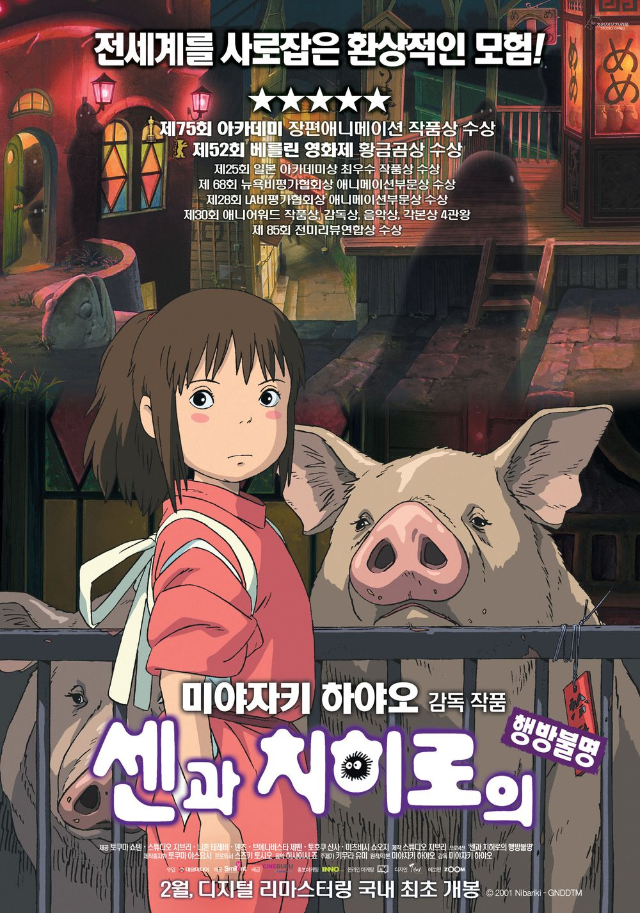
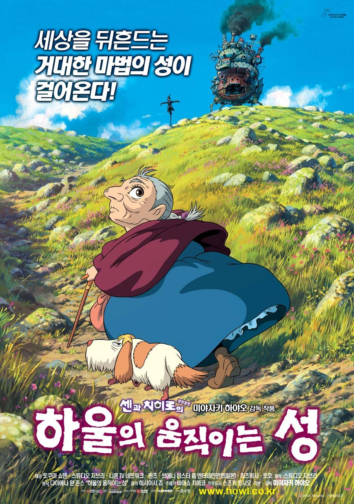
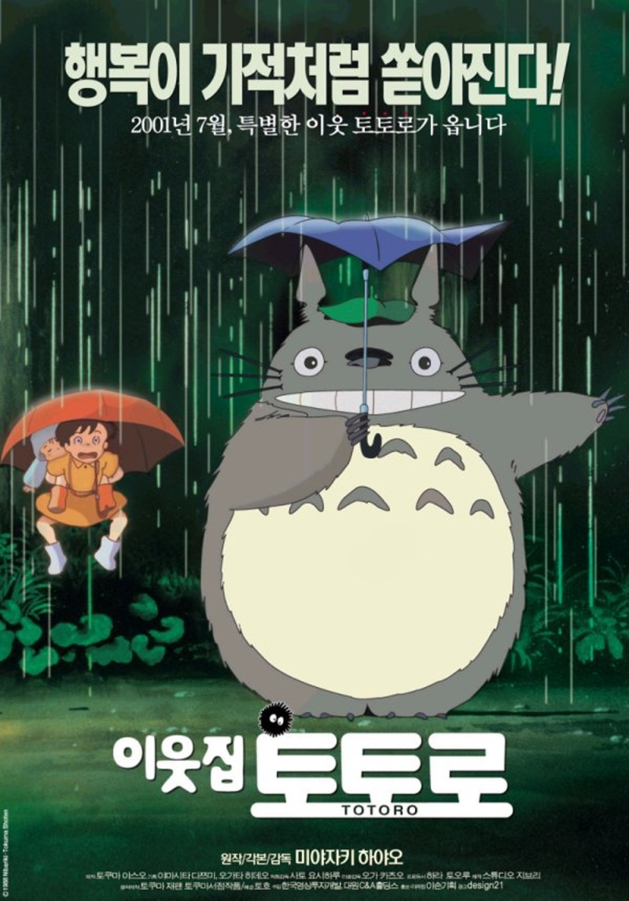

일본 도쿄에 있으며, 전 세계적으로 많은 팬을 보유한 애니메이션 스튜디오이다. 1985년에 설립되어 미야자키 하야오 감독을 중심으로
<바람계곡의 나우시카>, <천공의 성 라퓨타>, <이웃집 토토로>, <폼포코 너구리 대작전>, <모노노케 히메>, <벼랑 위의 포뇨> 등 자연과의 공존, 반전·평화의 메시지를 가진 애니메이션 영화를 제작했다.
지브리 작품들



센과 치히로의 행방불명
하울의 움직이는 성
이웃집 토토로
금지된 세계의 문이 열렸다! 이사 가던 날, 수상한 터널을 지나자 인간에게는 금지된 신들의 세계로 오게 된 치히로.. 신들의 음식을 먹은 치히로의 부모님은 돼지로 변해버린다. “걱정마, 내가 꼭 구해줄게…” 겁에 질린 치히로에게 다가온 정체불명의 소년 하쿠. 그의 따뜻한 말에 힘을 얻은 치히로는 인간 세계로 돌아가기 위해 사상 초유의 미션을 시작하는데…
어느 날, 영문도 모른 채 마녀의 저주로 인해 할머니가 된 소녀 '소피' 절망 속에서 길을 걷다가 거대한 마법의 성에 들어가게 된다. 그곳에서 자신과 마법사 하울의 계약을 깨주면 저주를 풀어주겠다는 불꽃악마 캘시퍼의 제안을 받고 청소부가 되어 ‘움직이는 성’에 머물게 되는데…
도시를 떠나 시골로 이사 온 ‘사츠키’와 ‘메이’는 우연히 숲속에 살고 있는 신비로운 생명체 ‘토토로’를 만나 신비한 모험을 함께 한다. 그러던 어느 날, 어머니의 병원에서 위태로운 소식이 도착하고 언니 ‘사츠키’가 정신없이 아빠에게 연락을 취하는 와중에 ‘메이’가 행방불명 되는데…
ost
히사이시 조(일본어: 久石讓, ひさいし じょう, 1950년 12월 6일 ~ )는 일본의 음악가, 작곡가, 지휘자이다. 본명은 후지사와 마모루(일본어: 藤澤守, ふじさわ まもる)이다. 영화 클래식 음악을 작곡한 작곡가이자 현대 클래식 작곡가, 거장 중 한 사람이다.
히사이시 조는 1950년 12월 6일에 일본의 나가노현에서 태어났다. 구니타치 음악대학의 학생일 때부터 모더니즘 음악가로서 명성을 쌓기 시작하였고, 1982년에는 첫 번째 앨범인 《Information》을 발매하였다. 1983년에 히사이시 조는 음반사로부터 애니메이션 감독인 미야자키 하야오의 장편 애니메이션인 바람계곡의 나우시카의 이미지 앨범의 작곡을 제안받았다. 당시 미야자키 하야오는 영화를 제작하는 동안 히사이시 조가 작곡한 곡을 듣고 크게 감동받았다고 한다.